4. Floating Little Leaves of Code
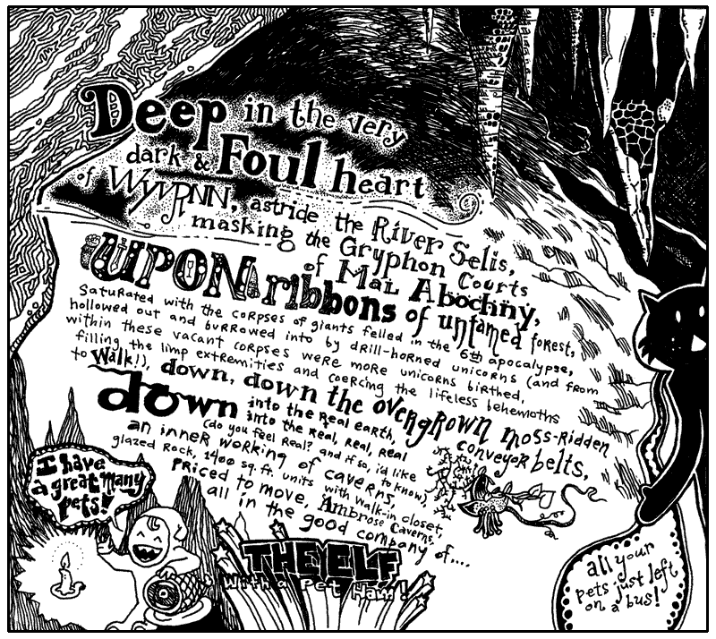
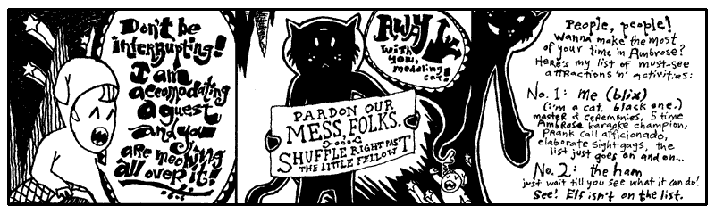
I’ve never seen the ham do anything but leak juice. Today, our business in Ambrose Caverns is with the elf. He is a crucial part of the next lessons. Let’s all make him feel welcome. Go start warming up your listening hats! (And please change out of those ridiculous stirrup pants.)
A prompt warning: this lesson is much slower. Stay with it. This will be a long, deep breath. The most crucial stage of your instruction. It may seem like you’re not learning much code at first. You will be learning concepts. By the end of this chapter, you will know Python’s beauty. The coziness of the code will become a down sleeping bag for your own solace.
1. The Leaf as a Status Symbol in Ambrose
Alright, Elf. Give us a quick rundown of the currency issues you’ve faced there in your kingdom.
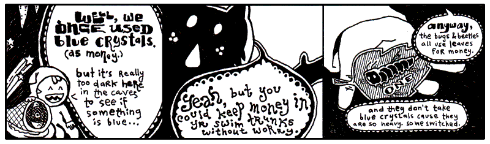
Yeah, that’s not the way I remember it. This Elf was paging me constantly. When I refused to call him back, he somehow left a message on my pager. Meaning: it beeped a couple times and then printed out a small slip of paper. The slip said something to the effect of, “Get down here quick!” and also, “We’ve got to rid the earth of this scourge of entrepreneurial caterpillars, these twisted insect vikings are suffocating my blue crystals!”
Lately, the exchange rate has settled down between leaves and crystals. One tree-grown note is worth five crystals. So the basic money situation looks like this:
This example is, like, totally last chapter. Still. It’s a start. We’re setting two variables. The equals sign is used for assignment.
Now leaf_tender represents the number 5 (as in: five blue crystals.) This
concept right here is half of Python. We’re defining. We’re creating. This
is half of the work. Assignment is the most basic form of defining.
You can’t complain though, can you Elf? You’ve built an empire from cashing your blue crystals into the new free market among the forest creatures. (And even though he’s an elf to us, he’s a tall monster to them.)
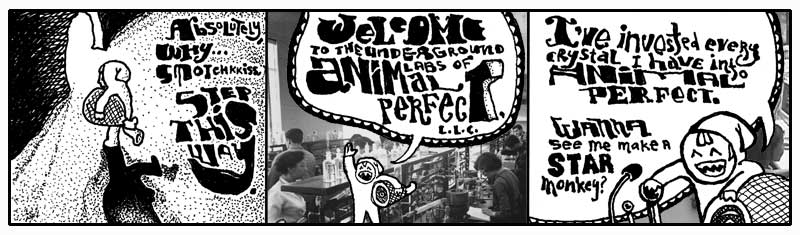
Nonono. Hang on a sec. You’re not ready for what the Elf here is doing in his caves. You’ll think it’s all positively inhumane, naughty, sick, tweeested, yada yada.
Now You’re Going to Hear the Animal Perfect Mission Statement Because This Is A Book And We Have Time And No Rush, Right?
Back, back, way back before speedboats, I owned a prize race horse who took a stumble on the track. She did ten front flips and crashed into a guy who was carrying a full jar of mayonnaisse. We had blood and mayonnaisse up and down the track. Needless to say, she was a disaster.
The vet took one look at her and swore she’d never walk again. Her legs were gone and the vet wouldn’t allow a legless horse to just sit around. We’d need to put her down. He swore his life and career on it, insisting we divide into two parallel lines. The people who could not refute the doctor’s claims on one side; those too stubborn to accept his infallable medical reasoning on the other. The Elf, his pet ham, and I were the only ones in that second line.
So while the others heaped up trophies and great wreaths around the horse, bidding it a fond farewell before the bullet came to take him home, the Elf and I frantically pawed the Internet for answers. We took matter into our own hands, cauterizing her leg wounds with live crawdads. It worked great! We now had a horse again. Or at least: a horse body with a crustaceous abdominal frosting.
She scurried everywhere after that and lived for years in pleasantly moist underground cavities.
Animal Perfect is now the future of animal enhancement. They build new animals and salvage old-style animals for parts. Of course, they’ve come a long ways. When Animal Perfect started, you’d see a full-grown bear walk into Animal Perfect and you’d see a full-grown bear with sunglasses walk out. Completely cheesy.
Stick around and you’ll see a crab with his own jet pack. That’s a new 2024 model jetcrab.
But now, the whole operation is up and running. And the cleanliness of the place is astonishing. All the equipment is so shiny. Everything is in chrome. Oh, and all the staff have concealed weapons. They’re trained to kill anyone who enters unannounced. Or, if they run out of bullets, they’re trained to pistol whip anyone who enters unannounced.
Elf, make me a starmonkey.
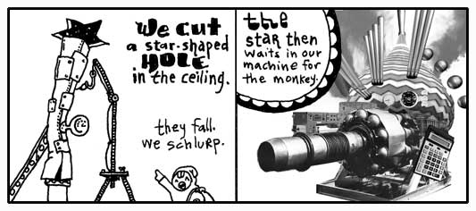
Some imaginary Python for you:
Variable pipe. Method catch_a_star. A lot of Pythonists like to think of
methods as a message. Whatever comes before the dot is handed the message. The
above code tells the pipe to catch_a_star.
This is the second half of Python. Putting things in motion. These things you define and create in the first half start to act in the second half.
- Defining things.
- Putting those things into action.
So what if the star catching code works? Where does the star go?
See, it’s up to you to collect the miserable, little star. If you don’t, it’ll simply vanish. Whenever you use a method, you’ll always be given something back. You can ignore it or use it.
If you can learn to use the answers that methods and operators give you back, then you will dominate.
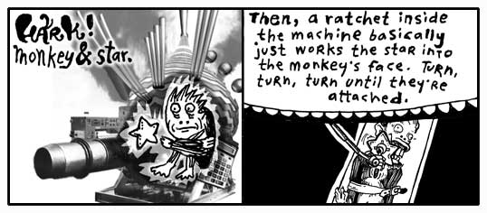
Quickly then.
The ratchet gets an attach message. What needs to be attached? The method
arguments: the captive_monkey and the captive_star. We are given back a
starmonkey, which we have decided to hang on to.
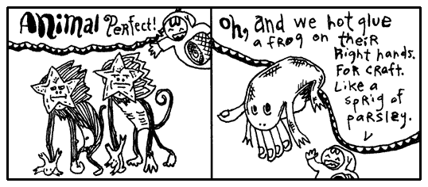
This is turning out to be such a short, little proggie that I’m just going to put it all together as one statement.
See how pipe.catch_a_star is right in the arguments for the method? The caught
star will get passed right to the ratchet. No need to find a place to put it.
Just let it go.
2. Small and Nearly Worthless
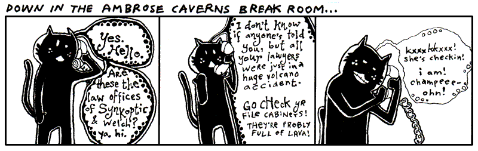
The hotel here in Ambrose is no good at all. The beds are all lumpy. The elevator is tiny. One guy put all his bags in the elevator and found out there wasn’t room for him. He hit the button and chased up the stairs after it all. But the stairwell turned out to be too narrow and his shoulders got wedged going up.
The soap mini-bars they give you are sized down for elves, so it’s impossible to work up a lather. I hate it. I keep mistaking them for contact lenses.
I turned on the faucet and nothing came out. Thing is: Ambrose is a place with magical properties, so I took a chance. I put my hands under the spigot. Invisible, warm wetness. I felt the hurried sensation of running water, darting through my fingers. When I took my hands away, they were dry and clean.
It was an amazing nothingness to experience. It was just like nil.
None
In Python, None represents an emptiness. It is without information, standing in when we have
nothing useful to report. It isn’t zero. Zero is a number.
It’s Python’s own walking dead, a flatlined keyword. You can’t add to it, it doesn’t evolve. But it’s terribly popular. This skeleton’s smiling in all the pictures.
The above plastic_cup is empty. You could argue that the plastic_cup
contains something, a None. The None represents the emptiness, though, so go
ahead and call it empty.
Some of you who have programmed before will be tempted to say the plastic_cup
is undefined. How about let’s not. When you say a variable is undefined,
you’re saying that Python simply has no recollection of the variable, it doesn’t
know the var, it’s absolutely non-existent.
But Python is aware of the plastic_cup. Python can easily look in the
plastic_cup. It’s empty, but not undefined.
False
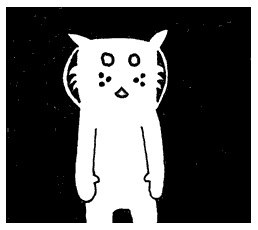
The cat Trady Blix. Frozen in emptiness. Immaculate whiskers rigid. Placid eyes of lake. Tail of warm icicle. Sponsored by a Very Powerful Pause Button.
The darkness surrounding Blix can be called negative space. Hang on to that
phrase. Let it suggest that the emptiness has a negative connotation. In a
similar way, nil has a slightly sour note that it whistles.
Generally speaking, everything in Python has a positive charge to it. This
spark flows through strings, numbers, regexps, all of it. Only a few keywords wear
a shady cloak: None, False, zero, and empty containers e.g. "",[],(),{} all draggin’ us down.
You can test that charge with an if keyword. It looks very much like the
def and for blocks we saw in the last chapter that are followed by indented code.
If plastic_cup contains either None, False, zero, or an empty container, you won’t see anything print
to the screen. They’re not on the if guest list. So if isn’t going to run
any of the code it’s protecting.
But None, False, zero, and empty containers need not walk away in shame. They may be of questionable
character, but if followed by not caters to the bedraggled. The if not
keywords have a policy of only allowing those with a negative charge in.
Who are: the falsey values None, False, zero, and empty containers.
You can also use if and if not in a single line of code*, if
that’s all that is being protected.
if plastic_cup: print "Yeah, plastic cup is up again!"
if not plastic_cup: print "Hardly. It's down."
And another nice trick: use and to add a variety of tests.
This trick is a gorgeous way of expressing, Do this only if a is true and b isn’t true.
Now that you’ve met False, I’m sure you can see what’s on next.
True
I saw True at the hotel buffet tables today. I cannot stand that guy. His
stance is way too wide. And you’ve never met anyone who planted his feet so hard
in the ground. He wears this corny necklace made out of shells. His face exudes
this brash confidence. (You can tell he’s exerting all of his restraint just to
keep from bursting into Neo flight.)
To be honest, I can’t be around someone who always has to be right. This True` is always saying, “A-OK.” Flashing hang ten. And seriously, he loves that necklace. Wears it constantly.
As you’d suspect, he’s backstage at everything on the if event schedule.
if True: print("Hugo Boss") acts like print("Hugo Boss").
Occassionally, if will haul out the velvet ropes to exercise some crowd
control. The double equals gives the appearance of a short link of ropes,
right along the sides of a red carpet where only matches can be admitted.
The double equals is simply an ID check. Do the gentleman at both ends of this rope appear to match?
In this way, you control who if lets in. If you have a hard time getting along
with True as I do, you can heartily welcome False.
Again, I Want You to Dominate
The double equals sign is an operator. Can you guess how it works?
It checks whether the values on both sides are an exact match, such as:
Now, do you remember what you need to do to dominate in Python?
Use the answers the operators give you.
In the above, how is the operator being used? Take the expression approaching_guy == "Kevin".
It evaluates to True whenever approaching_guy is set to "Kevin". Match.
When approaching_guy is set to "John", there is no match. The operator evaluates to False.
A shake of the head. That answer is handed to if, who refuses to admit a False.
The print() statement never sees realization.
Without an operator, if can still evaluate the True. Here we check whether at_hotel is True.
Look at the above. What happens when at_hotel is True?
The if chooses which corridor of code Python walks through. If at_hotel is True,
the first string—my e-mail address at Hotel Ambrose—will be used. The else keyword marks code which
runs when the if condition fails. If at_hotel is False, Python instead uses my e-mail address at
Dr. N. Howard Cham's office, where I take my apprenticeship.
We could also write this in a single line:
Even thoughif isn’t a function or method, if does give a return answer, sort of. The expression returns one value or
the other, depending on the if condition.
email = "why@drnhowardcham.com" # fallback email
if at_hotel:
address = "why"
address += "@hotelambrose.com"
email = address
Peek closely at that magical incantation inside the if branch.
The plus-equals operator, +=, is shorthand for taking a variable's current value, adding something to it, and assigning the result back.
The line address += "@hotelambrose.com" is roughly equivalent to address = address + "@hotelambrose.com".
You can read it as: take address and tack "@hotelambrose.com" onto the end.
A tiny instruction, but a useful one. Python programmers use += constantly whenever something needs just a little more attached to it.
Truthiness
Now, here's a strange little secret. Python isn't nearly as obsessed with True
and False as you might think.
Most things carry their own tiny positive charge. Non-empty strings, non-empty lists, non-empty dictionaries, non-zero numbers—all of them stroll confidently up to the velvet ropes and are waved right in.
crew_members = ["Fox Tall", "Fox Small"]
if crew_members: print("The expedition may proceed.")
Notice that we didn't write: if crew_members == True:.
That would be like asking the bouncer whether a guest is literally named True. We don't care about that. We only care whether the guest arrives with enough spark to get through the door.
This idea is called truthiness. Python quietly asks, "Does this thing behave like true?" If the answer is yes, the ropes part and the guest enters.
So you'll often see:
rather than:The first asks whether the map exists and has something in it. The second asks whether the map is exactly equal to True, which would be a very odd sort of map indeed.
Falsiness
We talked about Truthiness. What about Falsiness?
Going back to the previous example for a moment:
email = why@drnhowardcham.com"
if at_hotel:
address = "why"
address += "@hotelambrose.com"
email = address
Here’s a question: what if at_hotel is None in the above example? Which address
is returned. None evaluates to False. So the fall back email is used "why@drnhowardcham.com".
Yes, nothing evaluates as False. By which I mean: None is falsey (evaluating to
False). Just as 0 (integer), 0.0 (float), 0j (complex), and empty collections like
"", [], or {}. Often None is a very useful case that we can test for.
Information
In Python, the following values are considered falsey and will evaluate to False when tested in an if statement:
- False
- None
- 0
- 0.0
- 0j # complex zero
- Decimal(0)
- Fraction(0, 1)
- "" # empty string
- b"" # empty bytes
- bytearray() # empty bytearray
- [] # empty list
- () # empty tuple
- {} # empty dict
- set() # empty set
- frozenset() # empty frozenset
- range(0) # empty range
if at_hotel is None:
print("No clue if he's in the hotel.")
elif at_hotel: #truthy
print("Definitely in.")
elif not at_hotel: # falsy
print("He's out.")
else:
print("The system is on the freee-itz.")
You can see None here means we are not sure where he is.
at_hotel is None is a comparison that ask “Are you None? Are you without information?”
If at_hotel is empty, Python doesn’t have any idea if I’m in the hotel or not.
So if answers with the “No clue...” string. In order to handle the True or
False possibilities, the elif keyword is used. While you can have only one
if and one else, you can fill the in-between with an exorbitant number of
elif keywords. Each elif acts as a further if test. Checking for a
positive charge.
If you’re doing okay at this point, then you’re in tip-top shape for the rest of the book. You have seen some pretty tough code in the last few examples. You strong fellow.
3. Chaining Delusions Together
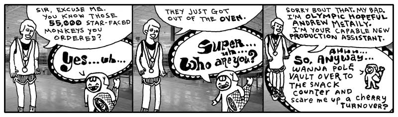
You finish reading the above comic and retire to your daybed for reflection. It’s one of those canopy affairs which is always logjammed with pillows. You sit atop the pile, gazing out upon the world. You see the tall smokestacks belching wide spools of fume and haze. The tangled concourses of freeways smattered with swift, shimmering traffic is but a gently pulsing eye muscle from your vantage point.
It is all so fantastic. How the colors of the horizon spread across the landscape as a great mix of butter and grease with a tablespoon of vanilla extract.
Yet, for all of the beauty which beckons for your attention, the images of the Elf and his Olympic Hopeful return. And more especially, that order for 55,000 starmonkeys. 55,000 starmonkeys, you think. Fifty-five Thousand.
You think of just the number itself. 55,000. It’s walking down a road. It might be in a forest, you don’t know for sure as your eyes are fixed right on the number itself. It’s stopping and talking to people. To tennis players, to a men’s choral group. There is merriment and good feeling. When it laughs, its lower zeros quiver with glee.
You want to talk to it. You want to skip along that forest trail with it. You want to climb aboard a jet bound to Brazil with it. And after five days and four nights at the leisureful Costa do Sauipe Marriott Resort & Spa, to marry it, to bear a family of 55,000 starmonkeys with it. To take possession of Nigeria with it.
With a flying leap, you dismount your pillow tower of isolation. Scrambling with the key, you unlock your roll top desk and pull out a sheet of paper, holding it firmly upon the desk. You begin scribbling.
Take possession of Nigeria with my new 55,000 starmonkeys... Over it, build Nigeria-sized vegetarians only casino and go-cart arena... Wings… we could have our own special sauce on the wings that’s different... Mustard + codeine = Smotchkkiss’ Starry Starmonkey Glow Sauce... Franchise, franchise… logos... Employee instructional videos... When you give the customer change, let them reach inside the frog on your hand to get it... If they have no change, at least put their reciept some place where they have to touch the frog... We’re leveling the playing field here... Advertise cheap pizza, let’s make our money off soda... Collect all 4 frosted glasses...
Wow, the ideas are really coming out. You literally had to smack yourself to stop. We need to put these in a safe place. Actually, we should store them on your computer and mangle the words. You look out the window and watch for FBI. I’m going to start this script.
The Flipping Script
Let this script be your confidante. It will ask for angry plans and puts the whole rant in an all-caps.
The input function is built into Python like
print. This method input will pause Python to let you type. When you hit Enter,
input will then stop paying attention to your keyboard punchings and answer back
to Python with a string that contains everything you typed.
The upper method is then used on the string that input is giving back. The
upper method is part of the String class. Which means that anything
which is a string has the upper method available. More on classes in the
next chapter, for now just know that a lot of methods are only available with
certain types of values.
I don’t think upper is going to cut it to get their attention. The authorities
need to feel the “Angry Ranting” before the starmonkeys start can touch down in
Lagos.
Maybe if we uppercase all letters in the string that will get their attention and add exclamation points at the end!!!
Now “Angry Ranting” becomes “ANGRY RANTING!!!”
Your Repetitiveness Pays Off
You hand me a legal pad, doused in illegible shorthand. Scanning over it, I start to notice patterns. That you seem to use the same set of words repeatedly in your musings. Words like starmonkey, Nigeria, firebomb. Some phrases even. Put the kibosh on. That gets said a lot.
Let us disguise these foul terms, my brother. Let us obscure them from itching eyes that cry to know our delicate schemes and to thwart us from having great pleasure and many go-carts. We will replace them with the most innocent language. New words with secret meaning.
I start up a word list, a Python Dictionary, which contains these oft seen and
dangerous words of yours. In the Dictionary, each dangerous word is matched up against
a code word (or phrase). The code word will be swapped in for the real word.
CODE_WORDS = {
'starmonkeys' : 'Phil and Pete, those prickly chancellors of the New Reich',
'catapult' : 'chucky go-go', 'firebomb' : 'Heat-Assisted Living',
'Nigeria' : "Ny and Jerry's Dry Cleaning (with Donuts)",
'Put the kibosh on' : 'Put the cable box on',
'Hammer' : 'Technology'
}
The words which are placed before a colon are called keys. The words after
the colon, the definitions, are often just called values. The colon
is just like a tiny two-dot bridge that lies between keys and their meanings.
Notice the double quotes around Ny and Jerry's Dry Cleaning (with Donuts).
Since a single quote is being used as an apostrophe, we can’t use single quotes
around the string. (Although, you can use single quotes if you put a backslash
before the apostrophe such as: 'Ny and Jerry\'s Dry Cleaning (with Donuts)'.)
Should you need to look up a specific word, you can do so by using the square brackets method.
CODE_WORDS['catapult'] will answer with the string 'chucky go-go'.
Look at the square brackets as if they are a wooden pallet with a label on it.
The label on this particular pallet is 'catapult'. A forklift could slide its prongs into each
side of the pallet and bring it down from a shelf back in the warehouse. The label on the pallet is
the key (what we placed before the colon e.g. 'catapult' : 'chucky go-go'). We are asking Python to find that key and bring
back its corresponding value (what we palced after the colon e.g. 'catapult' : 'chucky go-go').
If you’ve never been to a warehouse, you could also look at the brackets as handles. Imagine an industrious worker putting on his work gloves and hefting the key back to your custody. If you’ve never used handles before, then I’m giving you about thirty seconds to find a handle and use it before I blow my lid.
As with many of the other operators you’ve seen recently, the brackets are a shortcut. We can also use a method to do the look up in a similar way.
CODE_WORDS.get('catapult') will also answer with the string chucky go-go.
Making the Swap
I went ahead and saved the Dictonary of code words to a file called wordlist.py.
from wordlist import CODE_WORDS
# Get evil idea and swap in code words
idea = input("Enter your new idea: ")
for real, code in CODE_WORDS.items(): #loop over codes
idea = idea.replace(real, code)
# Write the gibberish to a new file (overwrites file if already there)
idea_name = input("File encoded. Please enter a name for this idea: ").strip()
with open(f"idea-{idea_name}.txt", "w", encoding="utf-8") as f: # Opens the file and automatically closes it when finished
f.write(idea)
Script starts by pulling in our word list. Like if and for, import is a Python keyword that acts as a porter for
our modules department. The statement from wordlist import CODE_WORDS goes searching for a module named
wordlist,usually a file called wordlist.py. Once it finds the module, it politely retrieves CODE_WORDS
and carries it back to us, ready for use.
After that, there are two sections. I am marking these sections with comments, the lines that start with pound symbols. Comments are useful notes that accompany your code. Folks who come wandering through your code will appreciate the help. When going through your own code after some time has passed, comments will help you get back into your mindset.
I like comments because I can skim a big pile of code and spot the highlights.
As the comments tell us, the first section asks you for your evil idea and swaps in the new code words. The second section saves the encoded idea into a new text file.
You see the for method? The for method is all over in Python. It’s available
to use with Lists, Dictionaries, even Strings. Here, our CODE_WORDS dictionary
is kept in a Dictionary. This for method will hurry through all the pairs of
the Dictionary, one dangerous word matched with its code word, handing each coded
pair to the replace method for the actual replacement.
In Python, replace is used to search and replace. Here, we want to find all the
occurrences of a dangerous word and replace with its safe code word. With replace,
you provide the word to find as the first argument, then the word to put in
its place as the second argument.
Why do we have to asign the answer of replace method back to the idea??
Doesn’t replace already replace the text? You might think the line would read:
idea.replace( real, code ) without asignment. But with string methods we always need to hang on to its answer.\
When a method is done, we return a newly altered string and need to catch it.
Finally, when you assign it to idea, you overwrite the old string.
Remember in Python strings cannot change. They are fixed. Python does not have a change-in-place string methods. Instead, both normal string replacement and any new string method returns a fresh (new born) string, leaving the old string alone. (Python stays calm and quiet, never destroying your personal property.)
Text Files of a Madman
Let us now save the encoded idea to a file. (Oh, I forgot we are still doing this spy stuff.)
# Write the gibberish to a new file (overwrites file if already there)
idea_name = input("File encoded. Please enter a name for this idea: ").strip()
with open(f"idea-{idea_name}.txt", "w", , encoding="utf-8") as f: # Opens the file and automatically closes it when finished
f.write(idea)
This section starts by asking you for a name by which the idea can be called. This name is used to build a file name when we save the idea.
The strip method is for Strings. This method trims spaces and blank lines
from the beginning and end of the string. This will remove the Enter at
the end of the string you typed. But it’ll also handle extra spaces if you
accidentally left any.
After we have the idea’s name, we open a new, blank text file. Normally, we would check the
filename to make sure the user hasn't slipped a path or other troublesome characters into
idea_name, but for our example, we'll trust the user, which is ourselves. The file name
is built by adding strings together. If you typed in 'mustard-plus-codeine', then
our math will be: 'idea-' + 'mustard-plus-codeine' + '.txt'. Python presses
these into a single string. 'idea-mustard-plus-codeine.txt' is the file.
We’re using the function open to open up the file object stream. Up until now, we’ve
used several built-in functions to do our work. We hand the print method a
string and it prints the string on your screen. One secret about built-in functions
like print: they are all stored inside a hidden module called builtins. You can
call them explicitly by writing builtins.print() instead of just print().
What does this mean? Why does it matter? It means builtins is at the center of Python’s universe.
Wherever you are in your script, builtins is right beside you. You don’t even need to spell builtins
out for Python. Python knows to check there.
Most functions are more specialized than print() or input(). Take open(), for example.
It opens a file and returns a file object. The creator of Python, the handsome Guido van Rossum,
gave us built-in tools for working with files, allowing us to open, read, write, and close files from the
earliest versions of Python.
-
content = f.read()reads the entire file and returns a string containing all of its text. -
f.write(idea)writes the contents ofideato the file. -
f.close()closes the file.
There is an important distinction here. open() is a built-in function, so you can call it without
importing anything. But read(), write(), and close() are methods of the file object returned by open().
These file-object methods are part of Python’s built-in file-handling machinery, provided by the
io module. They are some of Python’s core tools for working with streams of data.
So, while you can safely call built-in functions such as print(), input(), and open(),
you’ll need to open() a file and get a file object before you
can use methods such as read(), write(), and close().
idea_name = input("File encoded. Please enter a name for sassy ideas file: ").strip()
with open( 'sassy_ideas-' + idea_name + '.txt', 'w', encoding="utf-8") as f: # Opens the file and automatically closes it when finished
f.write(idea)
# File automatically closes here
Yes, that’s good. I’d make just one tiny grammar fix:
We pass two arguments into open. The first is the file name to open. The second is a string
containing our file mode. We use 'w', which means to write to a file (creating or overwriting).
Some other file mode options are:
'x'to write without overwriting existing files,'r'to read from the file, and'a'to add to the end of the file.
The file is opened for writing and we are handed back the file in variable f,
which can be seen sliding down the chute into our with Context Managers.
Inside the context manager, we write to the file. When the context manager
finishes, our file is closed as well automatically.
Note that we used encoding="utf-8". This simply tells Python how to translate the text into bytes when it saves the file.
UTF-8 is a good default encoding to use because it can handle characters from many different (human) languages.
Settle Down, Your Ideas Aren’t Trapped
Here, let’s get your ideas back to their original verbage, so you can ruminate over their brilliance.
from glob import glob
# Assuming CODE_WORDS is defined in a separate wordlist.py file
from wordlist import CODE_WORDS
# Print each idea out with the words fixed
for file_name in glob("idea-*.txt"):
with open(file_name, "r", encoding="utf-8") as f:
idea = f.read()
for real, code in CODE_WORDS.items(): #decoding the encoded message
idea = idea.replace(real, code)
print(idea)
By now, you should be up to snuff with most of this example. I won’t bore you with all of the mundane details. See if you can figure out how it works on your own.
The glob function is a scruffy, over-eager bloodhound living inside Python’s glob module.
The glob method searches a directory (some of you may call them “folders”).
The glob method copies from Unix command with the same name to search for files.
When you think of glob, think of a globe and spinning a spherical map to search the
whole folder for your files. (Can you start to see the shiny, glinting gorgeousness of Python?)
So we’re using the spinning globe to get those files in the directory which match
'idea-*.txt'. The glob method will use the asterisk as a wildcard. We’re
basically saying, “Match anything that starts with idea- and ends with
.txt.” The spinning globe spins off to the directory and comes back with a list
of all matching files.
That list of files will come in the form of List the Caterpillar, with a
String for each file.
??? tip Glob in action:
If you are curious and want to play with glob, try this:
>>> from glob import glob
# 1. Get all files and folders in the current directory
>>> print(glob('*'))
# 2. Get all .txt files in a specific folder
>>> print(glob('documents/*.txt'))
4. The Miracles of Lambda and Sorted
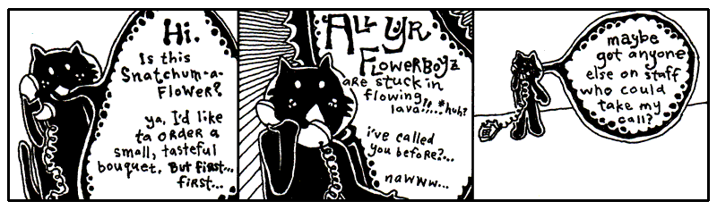
Since you and I are becoming closer friends as we share this time together, I should probably let you in on a bit of the history going on here. It’s a good time for a break I say.
First, you should know that Blix is my cat. My second pet to Bigelow. Granted, we hardly see each other anymore. He’s completely self-sufficient. I’m not exactly sure where he’s living these days, but he no longer lives in the antechamber to my quarters. He emptied his savings account about seven months ago.
He does have a set of keys for the house and the Seville. Should he ever find himself stranded, I will gladly step away from our differences and entertain his antics around the house again.
Make no mistake. I miss having him around. Can’t imagine he misses my company, but I miss his.
A Siren and A Prayer
I first saw Blix on television when I was a boy. He had a starring role on a very gritty police drama called A Siren and A Prayer. The show was about a god-fearing police squad that did their jobs, did them well, and saw their share of miracles out on the beat. I mean the officers on this show were great guys, very religious, practically clergy. But, you know, even clergymen don’t have the good sense to kill a guy after he’s gone too far. These guys knew where to draw that line. They walked that line every day.
So, it was a pretty bloody show, but they always had a good moral at the end. Most times the moral was something along the lines of, “Wow, we got out of that one quick.” But there’s serious camaraderie in a statement like that.
The show basically revolved around this one officer. “Mad” Dick Robinson. People called him Mad because he was basically insane. I can’t remember if he was actually clinically insane, but people were always questioning his decisions. Mad often blew his top and chewed out some of the other officers, most of whom had unquestionable moral character. But we all know it’s a tough world, the stakes are high out there, and everyone who watched the show held Mad in great regard. I think everyone on the squad grew quite a bit as people, thanks to Mad’s passion.
The officers couldn’t do it all themselves though. In every single episode, they plead with a greater force for assistance. And, in every single episode, they got their tips from a cat named Terry (played by my cat Blix.) He was just a kitten at the time and, as a young boy tuning into A Siren and A Prayer, I found myself longing for my own crime-sniffing cat. Terry took these guys down the subway tunnels, through the rotting stench of abandoned marinas, into backdoors of tall, industrial smokestacks.
Sometimes he was all over an episode, darting in and out, preparing traps and directing traffic. But other times you wouldn’t see him the whole episode. Then you’d rewind through the whole show and look and look and look. You’d give up. He can’t be in that episode.
Still, you can’t bear to let it go, so you go comb through the whole episode with the jog on your remote, combing, pouring over each scene. And there he is. Way up behind the floodlight that was turned up too high. The one that left Mad with permanent eye damage. Why? Why burn out the retinas of your own colleague, Terry?
But the question never got answered because the series was cancelled. They started to do special effects with the cat and it all fell apart. In the last episode of the show, there is a moment where Terry is trapped at the top of a crane, about to fall into the searing slag in the furnace of an iron smelt. He looks back. No going back. He looks down. Paws over eyes (no joke!), he leaps from the crane and, mid-flight, snags a rope and swings to safety, coming down on a soft antelope hide that one of the workers had presumably been tanning that afternoon.
People switched off the television set the very moment the scene aired. They tried changing the name. First it was God Gave Us a Squad. Kiss of Pain. Then, Kiss of Pain in Maine, since the entire precinct ended up relocating there. But the magic was gone. I went back to summer school that year to make up some classes and all the kids had pretty much moved on to football pencils.
Lambda
A couple years ago, I started teaching Blix about Python. When we got to this part this part of the lessons, he said to me, “Lambda functions remind me of Mad Dick Robinson who was always good with the ladies.”
“Oh?” I hadn’t heard that name in a while. “I can’t see how that could be.”
“Well, people say lambda functions can be difficult to understand.”
“They’re not difficult,” I said. ““A lambda is a compact little function-making machine. It often appears for one quick job, though you can keep it around if you insist on adopting it.”
Blix began licking his fur, ignorning me.
I added, "Just like a function, with lambda we have arguments that are passed in and the function code or expression that gets evaluated. Just like a function, we use a colon to separate the two."
Blix shook his head not understanding anything.
"For lambda x: x.lower(), we could read it as take x and give back lowercase x.
You try to read this function."
"
"Umm. take x and give back x times 2. Seems dumber than Mad Dick Robinsons."
"Exactly. Why not just write 4*2? Well Lambda is useful as short cut when we want to multiple numbers by two many times."
times_by_two = lambda x: x * 2
times_by_two(1) # gives 2
times_by_two(4) # gives 8
times_by_two(2) # gives 4
times_by_two(8) # gives 16
"That seems awfully...silly? Why not just define a function or list comprehension?" said Blix, remembering the assembly line from Chapter 3.
"You mean like this? [n*2 for n in [1,4,2,8]]?"
"Ah yes! That seems like a less dumb way to double a bunch of numbers."
"Yes, but back on topic. The power of the **lambda function ** comes when you just want to make a quick one-off calculation. It works sort of like a disposable function, that you use once and never use again.”
"Like a one night stand?" asked Blix.
"Well, I guess you could think of it like that but lambda is more like one pocket-sized trick, for small expressions. If you needs a suitcase full of statements, give it a proper def.”
"Yeah, yeah, suitcase. Right... I have a perfect use case then! Write me a lambda function to help expedite my dating! I have a long list of profiles. Can you help me narrow them down to ones open to.. you know..."
"What?"
"You know..."
"Cheap flings? I don't think Python was meant for that..."
"Just make with the code already!"
profiles = [
"Looking for something casual, fun dates, and picnics and lasagna.",
"I'm looking for marriage and a litter of kittens. Only serious cats please.",
"I'll be visiting the neighborhood so short-term works great!",
"I am looking for Mr. Purfect. He needs to have all his shots."
]
from profiles import profiles
# Define the lambda function rule
is_open_to_hookups = lambda bio: "casual" in bio.lower() or "short-term" in bio.lower()
# Test profiles for tags by runing the lambda function and print the results
results = filter(is_open_to_hookups, profiles)
print(list(results))
"Ah! Hmm. lambda bio: and filter? What's that...? Well, I don't really care. Did I get any matches?"
"Blix, try to understand the code first. The lambda function takes in an argument bio and checks if the words casual or short-term are in the bios. We then apply this to your list of potential suitors or suitresses using filter to filter and return the matches, and voilà, we get a list of... eligible mates."
"I see, I see... This will really amp up my dating life!" said Blix pressing the pads of his fingers together, lost in deep thought.
"That's the first time I think I've heard Python helping someone's dating life."
“Now getting back to Mad Dick Robinsons. Mad was just an officer, sworn to uphold his duty,” I said. “But he was a real miracle to watch out in the field. Now, this example shows pick up line from the show that Mad Dick used to get dates" I pointed to an example I’d written down for him using lambda.
loud_pickup_line = (lambda x: x.upper()+"!!!")("You look like you could use help to steer your car. Come sit on my lap and I'll teach you.")
“I get it, apply upper to each item it comes across and + "!!!" adds exclamation marks.
So the lambda works like some sort of placeholder function?” he said.
I nodded yes.
“I understand, sort of, but your examples are too weird. Could you give an example that's related to my life? What about my cat toys?" he said pointing a paw at the dirty sock and toy mouse across the room.
"That's my sock, not your toy..." I tried to argue but gave up mid-sentence.
I scribled an example on the page.
kitty_toys = [{"name": "sock", "fabric": "cashmere"}] + \
[{"name": "mouse", "fabric": "calico"}] + \
[{"name": "eggroll", "fabric": "chenille"}]
#get the fabrics
fabrics = list(map(lambda toy: toy["fabric"], kitty_toys))
“This is a small miracle,” he said. “I can’t deny its beauty. Look, there are my
kitty_toys_, laid out with their characteristics. Behold, the lambda function,
grabbing each fabrics using ap.”
“I apologize if your list of toys looks a bit confusing,” I said. Like you, Blix had
learned about the List, the caterpillar stapled into the code, with square
brackets on each side and each item separated by commas. (Ah, here is one:
[1, 2, 3].) He had also been taught the Dictionary, with curly braces on each end
which look like small, open books with words in the dictionary
matched up with its definition by an colon. (Be beholden: {'blix': 'cat', 'why' : 'human'}.)
“Yes, vexing,” he said. “It has square brackets like it’s an List, but inside colons like it’s a Dictionary. I don’t think you’re going to get away with that.”
“It does seem a bit odd, doesn’t it?” I said, tease-nudging him with a spoon. “I’ve done your kitty toy list in a mix of the two. I’m using a shortcut. Which is: A bunch of Lists each with a single Dictionary inside it.“
“Oh, I see,” he said. “You criss-crossed ‘em. How neat!”
“Yes, yes, you’re on it,” I said. He was also very good with a protractor. “I have three Lists, each with a Dictionary inside. Notice the plus signs? I’m adding them into one big List."
"Here’s another way of writing it…” I jotted down.
kitty_toys = [
{"name": "sock", "fabric": "cashmere"},
{"name": "mouse", "fabric": "calico"},
{"name": "eggroll", "fabric": "chenille"}
]
One List, which acts as our list of chew toys. Three Dictionaries in the List to
describe each toy. The first toy is described as {"name": "sock", "fabric": "cashmere"},
the second {"name": "mouse", "fabric": "calico"} and so on. A List of Dictionaries!
Sorting and Iterating to Save Lives
“Let’s sort your toys by name now,” I said. “Then, we’ll print them out in that order.”
“How does sorted work?” asked Blix. “I can tell it’s a built-in function you can use with
a list because kitty_toys is a list. But what is key? And why do we need to use lambda? Not again!?”
“Okay, let's take it one step at a time. Breathe.”
Panting calms down.
“The sorted function takes an iterable as its first argument. Lists, dictionaries,
and sets are examples of iterables. key= is optional and tells Python how we want to sort the items.”
“Oh, I see!!! We have to tell Python what to sort our list by! But why does it say key=? I haven't seen that before.”
“Python uses position most of the time for function arguments. For example, in def greet_user(name, age):,
the first argument is name and the second is age.”
Blix looks at his eggroll, hunger building.
“But Python sometimes uses what are called keyword arguments to make code easier to read.
These arguments give a value a named seat. Just think of key= as a way to tell sorted() what to use when sorting.”
Blix nods.
“It tells Python what to use when deciding how to sort each item. Here, lambda toy: toy["name"] says,
‘For each toy, use its name.’ Blix. Python goes through the list, gets the name from each toy, and sorts
the toys based on those names.”
“OH!! So, sort by name then. The key gives instructions for what we sort by! It makes sense to sort
by name, so my eggroll goes to the top of the list.”
“Right. We give key= the lambda function lambda toy: toy["name"], which tells sorted() to sort by each toy's name.”
“That lambda function again? I thought we were done with that?” Blix replied with a grimace.
“Yes, but it's not so complicated. We'll split that lambda function into its two sides: the argument
and the expression. Do you see toy is the lambda argument?” I said.
Blix nodds absently, looking at the eggroll.
“And toy["name"] is the expression. That is what the lambda returns, and sorted() uses that value to sort by.”
“Ah, okay. toy["name"]. Right, a dictionary lookup."
“The lambda then answers sorted() with a name string, such as "mouse" or "sock". And sorted()
compares those name strings alphabetically and gives us back a new, sorted list of toys!”
"Oh great! And what's that for thing??”
"You remember that episode when Mad...”
“Episode?” he said. Yeah, he can’t understand the concept of TV dramas. Yeah, I’ve tried explaining.
“Or, yeah, remember that one eyewitness account we watched where Mad was trying to talk down that crazy spelling bee contestant from the ledge of a college library?”
“I remember it better than you because I was riding in a remote control plane.” Yep, it was one of those episodes.
“Do you remember how Mad got the guy to come down?” I asked.
“People in spelling bees love letters,” said Blix. “So what Mad did was a genius move on his part. He started with the letter A and gave reasons, for all the letters of the alphabet, why the guy should walk back down the building and be safe on the ground.”
”’A is for the Architecture of buildings like this,’” I said, in a gruff Mad voice. ”’Which give us hope in a crumbling world.’”
”’B is for Big Guys, like your friend Mad the Cop,’” said Blix. ”’Guys who help people all the time and don’t know how to spell too great, but still help guys who spell really great.’”
“See, he went through all the letters, one at a time. He was iterating through them.” It Err Ate Ing.
“But the guy jumped anyway, Why. He jumped off on letter Q or something.”
”’Q is for Quiet Moments that help us calm down and think about all of life’s little pleasures, so we don’t get all uptight and starting goofing around on tiptoes at the very edge of a big, bad building.’”
“And then he jumped,” said Blix. He shook his head. “You can’t blame Mad. He did his best.”
“He had a big heart, that’s for sure,” I said, patting Blix on the shoulder.
sorted_toys = sorted(kitty_toys, key=lambda toy: toy["name"])
for toy in sorted_toys:
print(f"Blixy has a {toy['name']} made of {toy['fabric']}")
“As for your for, it starts at the top of the list and goes through each item, one at a time. So toy takes turns being each item in the list. For each toy, we look up its name and fabric in the dictionary, then print them out.”
“Okay, so toy takes turns being each of the different toys I have. But now I have them all in order.”
“That’s right,” I said. “You know how I’ve really been harping on using the answers that functions give you? Here, we’re simply using the sorted list that sorted() gives us.”
An Unfinished Lesson
“That’s good enough for today,” said Blix. “Can I have a fresh saucer of milk, please?”
I filled his saucer to the brim and he guzzled from it for some time while I took a poker and jabbed at coals in the fireplace. My mind wandered and I couldn’t help but think further of lambda. I wondered what I would teach Blix next.
I probably would have taught him about continue. When you are iterating through a
list, you may use continue to skip on to the next item. Here we’re counting
toys that have a non-eggroll by skipping those that do with continue.
non_eggroll = 0
for toy in kitty_toys:
if toy['name'] == 'eggroll':
continue
non_eggroll = non_eggroll + 1
I could also have taught him about break, which kicks you out of an iterating
loop. In the code below, we’ll print out each of the toy dictionaries until we hit
the toy whose fabric is lycra (Blix's new cuddle whale toy is made with lycra). The break will cause the loop to abruptly end.
I never got to teach him such things. I continued poking away at a particularly stubborn coal which was caught in the iron curtain of the fireplace and threatened to drop on my antelope skin rug.
As I hacked away ferociously at the black stone, Blix slipped away, presumably on the bus bound for Wixl, the very bustling metropolis of the animal economies. Who knows, he may have first stopped in Ambrose or Riathna or any of the other villages along the way. My instinct say that Wixl was his definitely his final stop.
Without any student to instruct and coax along, I found myself quite lonely, holed up in the estate. In the stillness of the dead corridors, I began to sketch out a biography in the form of this guide.
I worked on it whenever I found myself bored. And when I wasn’t bored, I could always switch on The Phantom Menace to get me in the mood.
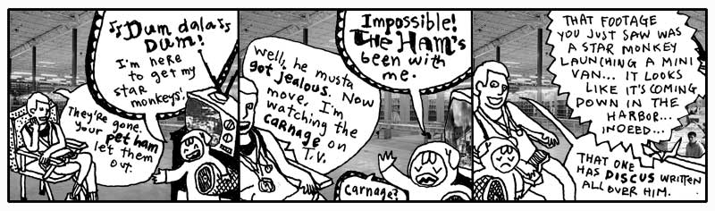